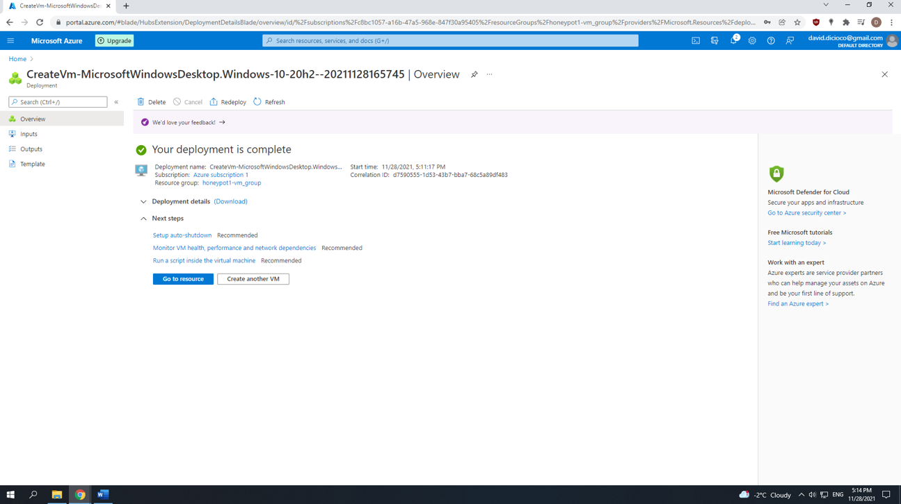

SIEM in Azure with Live Cyber Attacks
Posted on: 15/11/2021, 9:04 PM
In this tutorial, I'll be describing the process of setting up Azure Sentinel (SIEM) as well as a Virtual Machine (VM) in the cloud which will function as a honeypot. This honeypot will be vulnerable to the internet, and we will be monitoring and logging attacks from different IP addresses from various countries around the world. We will then take that data and display it on a map so we can visually see where the attacks are coming from. The logging attacks will consist of failed Remote Desktop Protocol (RDP) logins.
Overview of Steps:
Estimated time to complete tutorial: 1-1.5 hours
By following this tutorial you'll be able to gain knowledge in the following:
a. Azure Portal
b. Azure Sentinel
c. Kusto Query Language (KQL)
d. Network Security Groups
Index
0) Prerequisites
1) Create a free Azure subscription
2) Create a Virtual Machine
3) Create Log Analytics Workspace
4) Enable gathering VM logs in Security Center
5) Setup Azure Sentinel
6) Log into VM with Remote Desktop
7) Turn off Windows Firewall on the VM
8) Create custom log in LAW to bring in our custom log with geodata
9) Create custom fields/extract fields from RawData custom log
10) Setup a Map in Sentinel (using Latitude and Longitude)
11) Waiting for attacks from the internet
12) Final Thoughts
0) Prerequisites
i. PowerShell Script for the Lab: Github link
ii. Azure Trial: https://azure.microsoft.com/en-us/free/
iii. Sentinel Map Query: Github link
1) Create a free Azure subscription
i. First start by setting up a free Azure account (https://azure.microsoft.com/en-us/free/). A $200 Azure credit will be assigned to your account for up to 30 days.
2) Create a Virtual Machine
i. This is the machine that will be exposed on the internet. To create one, open -> https://portal.azure.com/#home and input “Virtual machines” and select it on the search bar.
ii. Click on the “Create” button on the top right and select “Virtual machine”.
iii. In the “Create a virtual machine” screen, input the following info on the “Basics” tab:
Instance details Virtual machine name: honeypot1-vm Leave everything as default Administrator account Username: davidadmin (You can use your name + admin) Password: Password123! (You can input any password you wish. This will be used to log into the virtual machine) Licensing Check the box (Windows 10 license with multi-tenant hosting rights) iv. Click on the “Next: Disks” button v. On the “Disks” tab, click on the “Next: Networking” button vi. On the “Networking” tab -> Network Interface NIC network security group: Click on the “Advanced” toggle Configure network security group: Click on the “Create new” button In the “Create network security group” screen remove the default “Inbound rules” Click on “Add an inbound rule” and input the following. Click on the “Add” button. This will allow all traffic from the internet to enter our VM. Destination port ranges: * Priority: 100 Name: DANGER_ANY_IN
vii. Click on “Review and create” and you will see the image below:
Click “Create”. We want to make our VM discoverable by any means necessary, whether it be PCP pings, SYN scans, etc. For this tutorial we will measure by failed RDP login attempts. Once deployment of the VM is completed it will look like this:
3) Create Log Analytics Workspace
The purpose of creating a Log Analytics workspace is to ingest logs from the VM. The window events logs from the VM will be ingested to the workspace and it will be converted to custom logs which will contain geographic information. This geographic information allows us to determine the location of where the attacks are coming from. Also, our SIEM (Azure sentinel) will connect to this workspace to be able to display the attacks through a map
i. Search for and select “Log Analytics workspaces” in the Search bar
ii. On the “Create Log Analytics Workspace” screen, click on the “Create” button iii. Input the following: Resource group: honeypot1-vm_group (Resource group name created from -> 2) Create a Virtual Machine) Name: law-honeypot1 iv. Click on “Review + Create” button, and click on the “Create” button
4) Enable gathering VM logs in Security Center
We will enable the ability to gather logs from the VM into the log analytics workspace
i. Search for and select “Microsoft Defender for Cloud” in the Search bar
ii. On the “Microsoft Defender for Cloud”, on bottom left side, click on “Environment settings” iii. Expand all the options under “Azure” and select the Log Analytics you just made -> “law-honeypot1” iv. Click on “Enable all Microsoft Defender for Cloud plans” and toggle “SQL servers on machines” to Off. Click “Save”
v. On the left-hand side, click on the “Data collection” tab and toggle to “All Events”. Click “Save” vi. Go back to the “Log Analytics Workspace”. We will now connect it to the VM. Click on your workspace, “law-honeypot1” vii. On the left-hand side, scroll down and click on “Virtual machines” viii. Click on the VM, “honeypot1-vm”
vix. Click on “Connect”
x. After its finished it should look like the following:
5) Setup Azure Sentinel
This is our SIEM we will use to visualize the attack data.
i. Search for and select “Microsoft Sentinel” in the Search bar ii. Click on “Create” and select the log analytics workspace we created, “law-honeypot1”
6) Log into VM with Remote Desktop
i. Search for and select “Virtual machines” in the Search bar. Select the VM, “honeypot1-vm” ii. Copy the “Public IP address”
iii. Click your Start Menu and type and open “Remote Desktop Connection”. Input the IP address in the “Computer” field and click on “Connect” iv. Type in an incorrect username and password and click “OK”. We want to first log a failed login attempt in the “Event Viewer”. Next, type in the correct username (davidadmin) and password (Password123!) you previously created